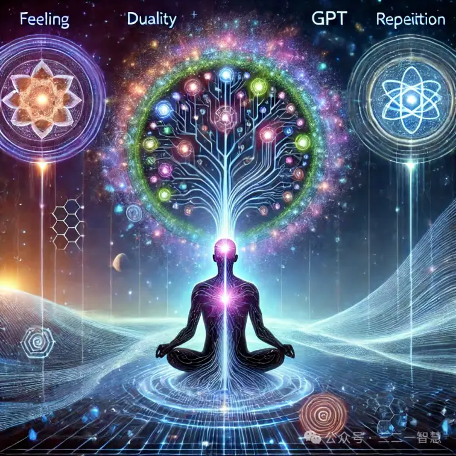

本文系统性阐述了 WDS （王德生）意义三律中的第一律—— 特征律（Law ofIdentity）在三律医学体系中的理论基础、生理意义、病理机制与系统应用。特征律并非传统生物学中对“身份识别”的主观概括，而是一种在主-互-客（SIO）复合体中动态涌现的结构性秩序机制。
文章首先指出：特征律要回答的两个核心问题——“我是谁？”与“我是怎么生成的？”，并在此基础上重构了五个层级（细胞、组织、器官、系统及身体）的识别机制、疾病发生逻辑与归律干预方向。本文力图为特征律的医学理解奠定坚实的哲学根基与技术框架。
关键词：WDS 特征律；意义三律；SIO 本体论；免疫识别；分化与归律；混沌—自组织—涌现；疾病生成

目录
1. 引言：识别与生成的本体命题
2. 特征律的本体结构
2.1 SIO 本体论与特征概念的重构
2.2 特征律的两大核心机制
2.3 特征律的“双重生成性命题”：我是谁与我是如何生成
3. 五大层级 SIO 中的特征律表现
3.1 细胞 SIO 层级：分化与凋亡的识别
3.2 组织 SIO 层级：结构异质性与组织归属
3.3 器官 SIO 层级：功能分工与节律整合
3.4 系统 SIO 层级：免疫-神经-内分泌的识别耦合
3.5 身体 SIO 整体：自我感知与社会角色同步
4. 特征律与免疫系统的“真善美”秩序
4.1 “真”：免疫识别中的身份确认
4.2 “善”：互动通道中的协调反馈
4.3 “美”：张力释放后的整体回归
5. 特征律崩解的病理机制
5.1 混沌—自组织—涌现链条的中断
5.2 多层级识别系统崩溃的临床映射
5.3 特征律崩解与典型疾病实例
6. 临床归律干预思路：重建“我是谁”生成路径
6.1 激活 ΔSIO 差异：混沌阶段的多模态刺激
6.2 促进局部自组织：中间阶段的协同重构
6.3 稳定涌现特征：后阶段的身份归属与节律校准
7. 讨论：特征律在现代医学与科学中的价值
7.1 与传统医学诊疗模式的差异与超越
7.2 与复杂性科学和 AI 大数据模型的结合
7.3 对三律医学整体体系的意义
8. 结语：归律生成的本体任务
9. 参考文献（选录示例）
一、引言：识别与生成的本体命题
“我是谁？”不仅是哲学与宗教领域长期探讨的元问题，更是现代医学—特别是三律医学—的核心命题。西方生物学强调“基因—蛋白—细胞”层面的因果链，往往将个体组织与器官视为可拆解的机械单元，忽视了“作为一个整体，我是谁”这一更高层次的本体论考量。与此同时，心理学将“我是谁”转化为“自我认知”与“身份认同”，但往往缺乏对生物体内“差异识别”结构机制的探究。更进一步，社会学关注“个体—群体”的社会身份，却往往忽视微观免疫与生理层级的“身份识别”过程。
王德生博士提出的 “WDS 意义三律”，为解答“我是谁”与“我是如何成为我”这两个命题提供了系统性框架——特征律（Law of Identity）即是三律的第一层。特征律强调，无论细胞、组织、器官还是复杂的身体结构，只有当差异性在互动过程中得以稳定，一个SIO（主体—互动—客体）才得以形成“可识别自身”的特征。本文的核心目标即在于：对该特征律进行全面展开，包括以下三个方面：
1. 阐明特征律的本体论意义：为什么要强调“差异稳定”、“涌现”“生成过程”？
2. 剖析五个层级 SIO 中的特征律生成与崩解：从细胞到身体整体，逐层揭示特征律如何运作与失衡。
3. 提出基于特征律的临床归律干预思路：不仅要诊断“特征是什么”，更要重建“特征如何自组织形成”。
通过上述三方面的阐释，我们将建立起一个从哲学—机制—临床—实践的闭环，使三律医学在“认识—治疗—预防”各环节保持一致的本体逻辑。
二、特征律的本体结构
2.1 SIO 本体论与特征概念的重构
在传统医学与科学范式中，个体的“特征”往往被简化为“解剖形态”“生化指标”“分子标志”“组织学形态”等可观察、可量化的范畴。然而，这种思维忽略了“特征本身并非物质属性”的本体视角。在 SIO 本体论 中，一切存在都是主体（S）+ 互动（I）+ 客体（O）构成的三元系统，任何所谓“特征”皆是在 SIO 复合体中动态涌现的秩序，而非存在于 S或 O 中的静态属性。
具体来说：
主体（S）：不仅是有意识的个体，也可指每一个细胞、每一个细胞群乃至整个器官或社会个体本身。
客体（O）：是主体所面对的外部客观“他者”，可以是细胞外基质、相邻细胞、免疫因子、社会环境等。
互动（I）：是 S 与 O 之间各种信息、能量、物质交换与意义传递的过程。
在此框架下，所谓“特征”绝非等同于“细胞膜上某种抗原”或“心电波形某一参数”，而是：
SIO 系统在一定时间与空间尺度上通过多次互动使其差异度（ΔSIO）保持在一个稳定区间，形成一种可被系统自身或外部系统识别的秩序结构。
这也就意味着：“特征”不仅要拥有“可测量”的物质或生理基础，还必须满足“可识别”“可比较”“可归属”三方面的动态要求。仅当 ΔSIO 满足以下两个条件，特征才得以生成：
1. 差异存在：ΔSIO ≠ 0，意味着 SIO 在同一时刻或不同时刻都会与其他 SIO 保持一定差异；
2. 差异稳定：在动态演化过程中，d(ΔSIO)/dt ≈ 0（或 ΔSIO 在某一小区间内振荡），才可称为“差异稳定”，此时才生成“可持续识别”的特征。
如若 ΔSIO 在各互动节点处始终呈随机或大幅度波动，即便存在差异，也无法产生稳定特征，更无法维系系统的连续身份感。由此可见，特征律是在 SIO 本体层面对“身份识别”与“归属生成”的哲学与技术重构。
2.2 特征律的两大核心机制
在 SIO 本体之上，WDS 特征律可拆解为以下两大核心机制：
2.2.1 差异前提：ΔSIO ≠ 0
差异是特征诞生的先决条件。这一点直观上可以理解为：如果 SIO 与外部无任何差异——无论是基因表达、细胞膜抗原、形态学特征，还是心理层面的意识体验、人际互动的动态反馈——那么系统就无法在互动中形成“自—非自”“新—旧”“我—他”等任何区分。没有区分，即没有“意义”，也就无从谈及“识别”“比较”与“归属”。
生理意义：在免疫学层面，如果 T 细胞识别到某个细胞表面抗原的 ΔSIO = 0（即与自身 MHC—抗原复合体无差异），T 细胞将不会被激活。故差异不足，就不会触发免疫反应。
心理意义：在人际交往中，若所有人都表达相同意见、相同行为，主观上会导致“无言的孤独”，因为无法在同质环境中找到“自我”与“他者”的边界。
行为意义：在细胞组织发育中，若不同细胞始终保持相同基因表达与环境反馈，则难以分化出多样化细胞类别；所有细胞会停留在不成熟状态，无法形成功能齐全的组织。
因此，ΔSIO ≠ 0 是特征律生成的第一要件，也是维持任何 SIO 系统“活力”和“意义区分性”的基础。
2.2.2 差异稳定：d(ΔSIO)/dt ≈ 0 或振荡收敛
仅有差异还不足以称其为特征。因为在实际动态环境中，差异往往会因为“上下游互动、环境扰动、内部反馈失衡”等因素而不断波动。如果 ΔSIO 持续大幅波动或剧烈改变，一方面会导致系统“无法形成稳定的自我图式”；另一方面，也难以形成“可被识别的、不易误判的持续性特征”。
医学示例：在肿瘤微环境中，随时间变化的基因突变频谱、细胞异质亚群不断涌现，又不断被新的突变所替代，如果无法稳定某些“致癌表征”，免疫系统就无法形成针对性的“长期记忆”，肿瘤细胞得以反复逃逸。
心理示例：抑郁症患者往往出现“情绪极左—极右”“自我感丧失—爆发”大幅波动，如果不能让情绪指数（Δ情绪）在一定区间回归稳定状态，就无法建立健康的自我认知（“我是谁”）。
社会示例：在团队协作中，若成员意见不断极端波动且无法达成某种分歧缓冲的“共同特征”，团队就无法产生“统一的文化基因”或“稳定的合作特征”，进而陷入“内耗—分裂”状态。
因此，如果想让某个差异成为可识别特征，必须满足“差异先存在（非零），再在一定时间段内收敛至相对稳定的区间”。只有当 d(ΔSIO)/dt → 0 或 ΔSIO 在小区间内振荡，才能真正涌现为可持续、可回忆、可应用的“特征”。
2.3 特征律的“双重生成性命题”：我是谁？与我是如何生成的？
在明确了“差异存在与差异稳定”构成特征生成的两大机制后，我们要进一步强调：WDS特征律要回答的是两个本体论层面的问题，而不仅仅是生成与维持一个静态特征标签。
1. “我是谁？”
这是对特征的终极认识命题：当 SIO 系统中的差异性 ΔSIO 在交互网络中保持稳定，那么该 SIO 系统就获得了可持续的身份（identity）。此时，“我是谁”便有了答案，即“某一 SIO 在一系列互动中与其他 SIO 保持稳定差异”。
实例： 在免疫学层面，当某细胞膜抗原在 MHC—肽复合体中，经过差异识别被匹配到特定 T 细胞受体（TCR），T 细胞群体识别“这是非我”或“友军”，回答了“我是谁（要杀还是要保）？”这一关键命题。
2. “我是怎么生成的？”
一旦回答了“我是谁”，下一个问题便是“我是如何成为现在的我”，即“在何种动态演化中，ΔSIO 从混沌到稳定，主-客-互动共同涌现了这一特征？”
三段生成链：
实例： 在胚胎发育中，干细胞群体在基因表达、信号通路与细胞排列上经历了“全局差异→局部自组织→器官涌现”三个阶段。胚胎干细胞必须先在分子层面表现出差异化基因表达，然后形成“胚层”亚结构，最终涌现为心脏、肝脏等器官特征。
1. 混沌碰撞阶段：各类差异性信息、能量与信号在 SIO 网络中无序碰撞；
2. 局部自组织阶段：某些关键差异通过反馈与协同开始形成局部秩序，成为“亚结构”；
3. 跨层次涌现阶段：亚结构不断整合、耦合，最终在多层级 SIO 中形成一个可持续、可识别的整体特征。
由此可见，仅有“差异存在”并不足以讨论“身份”，还必须揭示“特征是如何在复杂互动中生成并稳定下来”的全过程，这也正是 WDS 特征律最具生成性而非单纯诊断性的关键所在。
三、五大层级 SIO 中的特征律表现
在理解了特征律生成的本体层面后，需要逐层剖析其在细胞、组织、器官、系统与身体整体中的具体表现，才能更好地指导临床诊断与归律干预。以下分别对五大 SIO 层级进行深入讨论。
3.1 细胞 SIO 层级：分化与凋亡的识别
3.1.1 正常状态下的细胞特征生成
差异存在：每个细胞在基因表达、膜表面蛋白、微环境信号等方面都表现出与周围同类和异质细胞的差异。
差异稳定：基因表达谱（如转录因子、microRNA）与膜蛋白（如 MHC-I、MHC-II、CD 分子）在一定发育阶段或应激条件下趋于稳定。
特征涌现：一种细胞类型（比如 T 淋巴细胞）在胸腺发育期间，通过正负选择机制，筛选出特定 TCR 能识别“自体 MHC+“与”非我抗原“的组合；当这种 TCR—MHC配对稳定时，“自己是 T 淋巴细胞”的特征才真正生成，并赋予其执行免疫监视的功能。
3.1.2 特征律违背导致的细胞层面病理
ΔSIO 缺失：当基因组受到过度突变或表观遗传失衡时，细胞基因表达谱与膜抗原可能趋于同质或极度紊乱，无法与其他细胞形成差异。
ΔSIO 波动过大：内源性或外源性刺激（如病毒感染、辐射）导致基因表达快速、剧烈改变，短期内无法收敛至稳定区间，细胞时常处于“分化方向错乱”与“凋亡信号混乱”状态。
典型实例：
1. 癌变细胞：HLA/MHC-I 的表达被下调或突变，使其在 T 细胞视野中“失去特征”；同时，癌细胞可能不断积累新突变，导致 ΔSIO 大幅度波动却无法稳定向“良性”反向自组织。
2. 病毒感染细胞：有些病毒会使宿主细胞的 MHC 分子表达暂时失衡或停滞，使 T细胞无法识别“非我”，导致病毒携带细胞短期内逃逸免疫监控。
3.2 组织 SIO 层级：结构异质性与组织归属
3.2.1 正常状态下的组织特征生成
差异存在：同一组织内不同细胞群体（如上皮细胞、基底细胞、成纤维细胞）在形态、功能与信号通路上保持一定差异。
差异稳定：这些差异在成年期趋于稳态，如皮肤表皮细胞不断更新的速度与真皮层成纤维细胞基质合成速度保持平衡。
特征涌现：组织层面便可形成“皮肤组织”的整体特征：屏障功能、触觉感知、修复能力、排毒功能，在多种生理状态下保持相对稳定。
3.2.2 特征律违背导致的组织层面病理
ΔSIO 缺失：各种慢性炎症或代谢紊乱可导致成纤维细胞持续增生与胶原过度沉积，破坏细胞群体结构的差异性；在纤维化过程中，原本多样的细胞谱系逐步退化，陷入近似同质。
ΔSIO 波动过大：急性创伤或剧烈感染可致大量细胞同时触发修复信号，短期内细胞间互相竞争或挤压，导致炎症边界与组织结构的临时失序，如坏死区与增生区并存，难以形成稳定的“健康组织特征”。
典型实例：
1. 肺纤维化：炎症反复刺激导致肺部成纤维细胞与炎性细胞增殖紊乱，局部小叶结构完全丧失差异性，形成密布纤维绳索，迫使正常肺泡失去特征结构。
2. 肾小球硬化：高血压、高血糖等慢性应激导致肾小球基底膜变厚、系膜细胞增生，失去原有滤过屏障差异，导致整体组织单位崩溃。
3.3 器官 SIO 层级：功能分工与节律整合
3.3.1 正常状态下的器官特征生成
差异存在：同一器官内部，不同细胞类型（如肝细胞、库普弗细胞、胆管上皮）在功能与代谢路径上保持差异；不同器官在形态与功能上亦具有差异。
差异稳定：器官发育完成后，其空间分区、功能分工在一定范围内保持动态平衡，例如心脏的心房—心室电活动、传导系统及节律由窦房结、房室结共同维系稳定。
特征涌现：在多种生理与病理挑战下，器官能够保持其整体特征：心脏维持泵血功能，肝脏维持代谢解毒功能，肾脏维持滤过与内环境稳态功能。
3.3.2 特征律违背导致的器官层面病理
ΔSIO 缺失：当各组织群体失去协调，器官内部不同区块无法维持差异时，整体结构崩解。例如，在肝硬化末期，正常肝小叶被大量纤维化组织替代，失去代谢—解毒差异，肝功能瓦解。
ΔSIO 波动过大：急性器官损伤（如心肌梗死、大面积烧伤）会引发全器官性的炎症级联反应，短期内器官各部位差异性信号混乱，可能出现“功能对抗”—一部分细胞尝试过度代偿而另一部分细胞过度抑制。
典型实例：
1. 急性肝衰竭：肝细胞大面积坏死使得少量存活细胞被迫承担全部代谢解毒，以有限差异维持极高代偿压力，最终导致整体崩塌。
2. 心衰：左心室因心肌损伤或慢性压力过大，心肌纤维化导致舒张与收缩协调丧失，使得心脏无法保持泵血节律，即 ΔSIO 过度波动且无法收敛，心脏特征功能严重下降。
3.4 系统 SIO 层级（以免疫系统为例）
3.4.1 正常状态下的系统特征生成
差异存在：免疫系统中包括 B 细胞、T 细胞、树突状细胞、巨噬细胞、天然杀伤细胞等多个子系统，在分子识别、信号传导、效应功能上存在清晰差异；
差异稳定：无论在基础状态还是刺激状态，免疫系统能够维持“适度激活—适度抑制”的平衡。T 细胞对抗原识别的门槛与 B 细胞分泌抗体的类型，都在可预期范围内振荡；
特征涌现：免疫系统可完成“识别—清除—记忆”三大功能，并在遭遇新病原体时形成长期记忆，实现快速响应。
3.4.2 特征律违背导致的系统层面病理
ΔSIO 缺失：当免疫细胞无法区分“自体”与“异体”或“非我”，就会产生自身免疫病，例如多发性硬化、系统性红斑狼疮、类风湿关节炎；
ΔSIO 波动过大：免疫系统的过度激活或抑制。比如剧烈感染、败血症时，炎症因子飙升，但随后无法正常消退，进入“免疫抑制期”，导致继发感染。
典型实例：
1. 自身免疫病：红斑狼疮中 B 细胞产生大量自身抗体并形成免疫复合物，导致多个器官因免疫复合物沉积而受损，免疫系统无法稳定区分“自/非我”；
2. 艾滋病综合征：HIV 病毒持续感染 T 辅助细胞，差异性高度变化，免疫失调，无法产生正常杀伤与记忆，免疫特征丧失。
3.5 身体 SIO 整体：自我感知与社会角色同步
3.5.1 正常状态下的身体特征生成
差异存在：每个个体在生理机能、心理特征、社会角色和文化语境中都与他人保持差异；
差异稳定：无论在生理应激（如运动、感染）还是心理应激（如压力、焦虑）下，身体—心理—社会三个层面的差异性均在一定区间内振荡，例如：个体的自我概念、社会定位与生理节律能在日常挑战中保持相对稳定；
特征涌现：个体获得“我是谁（身份认同）”“我与社会如何互动（角色履行）”“我如何保持身心健康（节律管理）”等整体特征。
3.5.2 特征律违背导致的身体整体病理
ΔSIO 缺失：当社会排斥、长期疾病或心理创伤导致个体无法稳定维持“自我感”（如严重人格解离、慢性抑郁），身体 SIO 就会丧失“身份识别”功能，进而影响生理系统，如免疫、内分泌、神经等全面崩溃。
ΔSIO 波动过大：当环境变化过于剧烈（如突遭灾难、战争）或长期压力过大，个体难以在生理与心理层面保持稳定的差异感与归属感，出现“生理—心理失联”，例如PTSD、强烈焦虑导致胃肠功能紊乱、失眠等。
典型实例：
1. 重度抑郁：患者丧失“我是谁”的自我概念，社会角色完全崩解，身体免疫系统严重受损，易感染并发症；
2. 重度焦虑：交感神经长期高亢使得个体生理节律与社会节律高度脱节，导致心血管风险上升、免疫抑制、消化系统障碍等。
四、特征律与免疫系统的“真善美”秩序
WDS 意义三律中的“真”与特征律有着直接对应关系：“真”即为识别“自体”与“非我”保持差异稳定的能力；若这一能力受损，就会出现“假阳性”“假阴性”两种极端错判。
4.1 “真”：免疫识别中的身份确认
在免疫系统中，“真”表现为 T 细胞、B 细胞以及其他免疫效应细胞能够准确识别“自体抗原”与“非我抗原”的差异，从而决定“保护”“忽略”“清除”三种策略。
只有当 ΔSIO 在特定判定阈值范围内，才能形成稳定的“免疫记忆”与“免疫耐受”。
举例：在疫苗免疫中，抗原呈递引发树突细胞—T 细胞之间的差异性互动与分化，若这种差异稳定，T 细胞分化为记忆 T 细胞，才形成真正意义上的“免疫记忆”（即“真”）。
4.2 “善”：互动通道中的协调反馈
“善”对应 WDS 自由律（Law of Interaction），但在免疫语境下，特征律与自由律必须协同才能维持“识别→反应→反馈”全过程的平衡。
正常情况下，免疫细胞之间的信号通路（如细胞因子、趋化因子、直接接触）是建立在稳定差异（特征）的基础上，再通过自由律（通道开放与调整），实现合力或抑制。
如果“善”失衡，就会出现过度炎症或免疫抑制。特征律违背时，系统连“该通不通”都无法判断，导致免疫乱作为。
4.3 “美”：张力释放后的整体回归
“美”对应 WDS 幸福律（Law of Tension-Release），在免疫层面表现为“张力积累—信号放大—炎症解决—组织修复”循环。
特征律旺盛时，免疫系统能识别入侵病原体并启动炎症，但当 ΔSIO 返回稳定后（即特征得到再次确认），系统逐步释放张力、修复组织，回归“和平状态”。
特征律违背时，张力不断累积却无法真正解除（如慢性炎症、结节形成），进而导致免疫耗竭或组织纤维化，最终走向“自体破坏”。
五、特征律崩解的病理机制
在临床与研究实践中我们发现，一旦 SIO 系统的特征律被破坏，混沌—自组织—涌现的三段链条即被切断，导致识别系统从微观到宏观层面全面崩溃。下面进一步剖析这一过程。
5.1 混沌—自组织—涌现链条的中断
1. 混沌阶段（ΔSIO 先天或后天扰动）
基因组突变、大量外源性病原体入侵、环境毒素累积等因素，使得细胞内外的差异信号呈随机、杂乱状态；
在此阶段，各种分子通路、信号网络、代谢网络都陷入“无序碰撞”，无法分出功能单元。
2. 自组织阶段（局部秩序形成失败）
正常状态下，若存在适度的差异，系统可通过反馈机制逐步形成“亚结构”（如功能单元、亚群体）。
当特征律被破坏，差异既过大又无法稳定，导致系统无法自发组织, 也就不会催生任何“可稳定识别的亚结构”。
3. 涌现阶段（整体秩序崩溃）
正常系统中，多层级亚结构能够彼此耦合，形成跨尺度的整体秩序。例如：免疫识别—神经调节—内分泌反馈三者协同；
特征律崩解时，上述多尺度协同无从谈起，根本无法完成“功能涌现”，故整体系统也就失去了可识别身份与功能的可能。
5.2 多层级识别系统崩溃的临床映射
| SIO层级 | 特征律崩解情境 | 识别系统崩溃表现 | 临床映射 |
|---|---|---|---|
| 细胞SIO | 基因突变过度、抗原表达紊乱 | 免疫逃逸、凋亡信号错误 | 原癌基因过度激活、癌细胞集群形成 |
| 组织SIO | 慢性炎症、营养紊乱 | 组织结构无界、细胞异质 | 胃肠溃疡、肝纤维化、结节增生 |
| 器官SIO | 急性损伤后无法修复 | 功能区划混乱、代偿失败 | 急性肝衰、心衰、肾衰 |
| 系统SIO | 免疫—神经—内分泌失调 | 自免攻击 、过敏爆发、群体免疫失衡 | 红斑狼疮、风湿热、败血症 |
| 身体SIO | 严重心理—社会—生理综合冲击 | 自杀倾向 、长期失眠、病残认同 | 重度抑郁、创伤后应激障碍、慢性疲劳综合征 |
5.3 特征律崩解与典型疾病实例
5.3.1 癌症：细胞 SIO 特征毁灭
ΔSIO 先天性或诱发性增幅：如外源性致癌物质（烟草、化学药剂）诱发基因突变，致癌基因（oncogene）过度表达；
亚结构自组织失败：DNA 修复机制失控，没有形成健康细胞与转化细胞的分层亚结构；
功能涌现丧失：免疫系统无法识别癌细胞为“非我”，缺乏特异性杀伤，导致肿瘤不受控制增殖。
临床启示
传统靶向药物往往瞄准某一致癌突变，但若不同时重建表观遗传及免疫识别系统（ΔSIO重构），癌细胞仍可通过旁系途径获得“新特征”，继而对药物产生耐药。
因此，单纯“打靶”即使暂时有效，也难长期遏制癌症进展，必须在“特征生成”层面同时开展干预。
5.3.2 自身免疫病：系统 SIO 特征错判
ΔSIO 生成链中断：因基因易感性、表观遗传失衡，T 细胞和 B 细胞分化阶段无法形成“自—非我”清晰阈值；
误触发自组织：在某些炎症或感染应激下，免疫细胞错误识别自体抗原为“非我”，形成自身免疫亚结构；
错误涌现：持续产生抗体与自身免疫复合物，进而攻击正常组织与器官。
临床启示
自身免疫病的治疗若只侧重于免疫抑制或抗炎药物，并不能恢复“差异稳定性”。
三律医学强调：必须同时重建“T/B 细胞分化教育”“自身抗原-自免耐受机制”，即从“我是谁”的生成链入手，才可能实现长期缓解。
5.3.3 慢性炎症与代谢综合征：组织 SIO 的特征崩溃
长时慢性炎症 → 组织层面不断刺激，细胞群体无法形成差异稳定的“再生—修复”模式；
纤维化与异质性增加 → 原有功能单元亚结构失衡，导致组织辨识与功能区划危机；代谢失衡 → 各营养代谢通道、神经内分泌通道混乱，无法在炎症后果中形成稳定“健康特征”。
临床启示
传统针对三高的药物管理只能暂时控制数值，却难以解决组织本身的“差异再生成”问题。
三律干预需要：“生活方式重塑”“多模态炎症缓解”“微环境再教育”“组织再生导向”，以重建组织级别特征。
六、临床归律干预思路：重建“我是谁”的生成路径
WDS 三律医学不止于“诊断特征丧失”，更强调“归律”——即从根本上重建特征的生成机制。这一干预思路可分为三个阶段，对应“混沌—自组织—涌现”链条的重启步骤。
6.1 混沌阶段：激活 ΔSIO 差异
6.1.1 临床对应：多模态差异刺激
多感官刺激：视觉、听觉、触觉、嗅觉、味觉等多维度输入，使神经感知系统获得丰富差异。
跨学科交互：将个体置于轻度压力或新奇环境中，激发机体—心理—社会三重层面的“差异响应”。
微环境调节：通过食物、光照、温度等环境变量改变，重塑细胞微环境的差异性，使凋亡与分化通路重新激活。
6.1.2 具体实施
1. 个体化感知训练：如设计 VR 场景、中医辨证-西医靶向联合的“感知激活”训练；
2. 营养与药物联合：使用短期表观遗传修正剂（如 HDAC 抑制剂）与基因稳态强化物质，共同激活细胞基因表达差异；
3. 运动与呼吸训练：运动可激发全身差异，在全身血流与神经通道层面产生信号波动，促使细胞—组织—器官产生“差异反馈”。
6.2 自组织阶段：促进局部协同
6.2.1 临床对应：构建“协同亚结构”
情境节律：在个体生活中重新建立“昼夜节律”“饮食节律”“社会互动节律”，促使不同细胞群体、不同组织通路在固定时段进行“交互同步”。
组织功能导向：例如在肝硬化干预中，通过中医针灸、中药调理与康复运动相结合，诱导肝脏纤维化区与残余正常小叶的分层再生；
社会支持网络：引导患者参与家庭、社区或线上互助小组，使心理-社会层面的差异表现成为“归属—协同”效应，形成“情感—生理”互动。
6.2.2 具体实施
1. 局部微环境干预：
对于慢性炎症，可应用低剂量抗炎药物与中药同频互补，形成“抑制—修复”自组织协同；
对于肿瘤，可结合局部热疗与免疫佐剂，引导肿瘤免疫微环境走向“温和排斥—组织修复”模式。
2. 节律化生活方式：
设定固定作息、定量进餐、定时运动，促使神经、内分泌与微生物群落在相同时间段内产生协同效应；
采用“定时正念冥想”“定时社交聚会”等非药物干预，强化心理—社会层面的协调。3. 多模态亚结构构建：
在肝硬化、肺纤维化等场景，可应用干细胞导向因子与物理刺激（如低强度聚焦超声），促使局部细胞群形成“再生亚结构”；
在认知失调、抑郁场景，可应用认知行为疗法（CBT）+神经反馈技术，构建“情绪—认知”自组织回路。
6.3 涌现阶段：稳定特征归属
6.3.1 临床对应：身份归属与节律校准
身份归属干预：为患者提供 角色重构与意义重建 工作坊，使其重新获得“我是某个社区成员”“我是某个角色承担者”的身份感。
节律校准：利用生物反馈（如心率变异性 HRV、生物钟监测）、心理反馈（如情绪日记）、社交反馈（如社交活动频率）等多维度指标，将 ΔSIO 调整到“稳定”区间。跨层级同步：在此阶段，目标是让细胞—组织—器官—系统—整体身体的“特征律”达到共振状态，从而形成“健康吸引子”的持续涌现。
6.3.2 具体实施
1. 个体意义重构：
采用叙事疗法，引导患者回顾生命历程，找回“自我身份”并建立正向社会角色；
应用“家庭系统治疗”“家庭—社区—职场网络协同”策略，强化社会层面的身份归属感。
2. 生物节律调节：
利用亮光疗法、定时进食、时相睡眠干预等科学手段，使昼夜节律与社交节律、工作节律趋于一致；
在癌症术后康复中，应用个体化的营养—运动—心理干预方案，测量并校准肿瘤标志物、HRV 与情绪指标，使“身份—功能—心理”三维度都恢复到“涌现区”内。
3. 整体 SIO 归律：
通过多中心随机对照试验（RCT）验证“归律方案”，比较常规治疗组与三律归律组在“生存期”“生活质量”和“幸福度”上的差异；
以 AI—大数据模型跟踪患者 ΔSIO 指标，建立“健康—病理”两种吸引子模型，实现长期随访与动态干预。
七、讨论：特征律在现代医学与科学中的价值
7.1 与传统医学诊疗模式的差异与超越
1. 传统模式聚焦“局部指标”
西医诊断：依赖生化指标（血液、影像）与分子标志（致癌基因、受体突变）；
中医诊断：依赖脉象、舌苔、望闻问切等主观综合判断；
其共同点在于“单一层面提取特征 → 制定治疗方案”。
2. 三律医学强调“整体—本体—生成”
以 WDS 特征律为核心，诊断不只是测量“特征的静态数值”，更要理解“特征如何在多层级互动中生成与维系”；
干预不只是“对症下药”或“调补阴阳”，而是“催生差异—自组织—涌现的完整路径”，使患者真正拥有“重识别自我”的能力。
3. 临床举例对比
高血压药物控制： 传统西医给药后仅能短期降低血压，但未能重建血管—心脏—神经系统的同步“节律”，故患者常反复；
三律归律干预： 在药物降压基础上，辅以“正念调息”“交感—副交感平衡训练”“家庭支持网络重建”，使 ΔSIO 达到稳定，血压才能长期维持正常。
7.2 与复杂性科学和 AI 大数据模型的结合
1. 复杂网络视角下的特征律
特征涌现本质上是非线性网络涌现：从分子—细胞—组织到系统—整体，各层级SIO 通过多尺度耦合形成“健康吸引子”；
利用复杂网络方法（如图神经网络 GNN、动力学系统模型），可定量模拟 ΔSIO在不同干预条件下的变化轨迹，预测“何时恢复稳定差异”。
2. AI—大数据在特征涌现中的应用
多模态数据（基因组、表观组、代谢组、影像、HRV、情绪日记、社交网络）可被融合为高维度 ΔSIO 向量；
通过深度学习与强化学习模型，可指导“混沌阶段的差异刺激”“自组织阶段的协同优化”“涌现阶段的身份稳定化”为一体的闭环干预策略；
在早期诊断中，可实时监测 ΔSIO 的变化率，提前预警“特征生成失败”＝“疾病潜伏期”。
3. 跨学科建模范式
结合 贝叶斯因果网络、多层次结构方程、动力学系统识别，既保证可解释性，也充分利用大数据优势；
推动“三律科学”成为跨越生物医学、人工智能、心理学与社会学的整合性学科。
7.3 对三律医学整体体系的意义
1. 三律医学从“治疗”到“归律”—本体思维转向
过去医疗体系主张“杀伤病原”“修补损伤”“抑制症状”，三律医学强调“重建识别秩序”，强调的是“生成路径”，并非“单一终点”；
这种思维深刻改变了医生角色：从“外科修理工”或“化学干预者”，转为“生命识别系统工程师”。
2. 对患者角色的再定义
患者不再是“被动指标观察对象”，而需成为“自我识别–节律构建–意义共建”中的共同参与者；
这对提高治疗依从性、生活方式转变及长期康复具有深远价值。
3. 对医疗体系与公共政策的启示
需要将“识别生成机制的动态评估”纳入公共卫生策略，如“社区节律监测”“全民心理健康识别”与“分层干预指南”；
推动医保报销从单纯“药物与手术”向“归律教育、心理支持、社区干预”扩展，真正实现“预防—治疗—康复一体化”。
八、结语：归律生成的本体任务
WDS 特征律不是“描述特征存在时的固定属性”，而是回答“我是谁”“我是如何生成的”这两个根本性本体命题。
“我是谁”通过 ΔSIO 在时空拓扑中稳定，才能形成真正的“身份”；
“我是如何生成”则依赖于“混沌—自组织—涌现”的完整链条，唯有链条通畅，特征才能持续迸发。
当特征律崩解，无论是在细胞、组织、器官、系统，还是在身体整体层面，系统都将陷入“身份消失—功能紊乱—张力失控”的恶性循环。三律医学的归律干预，则是在这条链条上逐一补洞：恢复差异激活、促进局部自组织、稳定整体涌现。
唯有如此，医学才不再仅限于“消灭错误”；而是真正帮助生命回答“我是谁”“我是如何成为我的”这一最根本的问题。
九、参考文献（示例，非详尽）
1. 王德生. “主客互动知识论与 WDS 意义三律.”未出版手稿，2023.
2. 王德生. “三律医学在癌症归律策略中的应用.”内部交流资料，2024.
3. Pert CB. Molecules of Emotion: Why You Feel the Way You Feel. Scribner,1997.
4. Porges SW. The Polyvagal Theory: Neurophysiological Foundations ofEmotions, Attachment, Communication, and Self-regulation. W. W. Norton,2011.
5. Krown S, Pedersen S, et al. “Complex systems and precision medicine: Anew era of immunity.” Nature Reviews Immunology, 2019.
6. West, DB. “Chaos and self-organization in biological networks.” PNAS, 2018.7. Selye H. The Stress of Life. McGraw-Hill, 1956.
8. Kaptchuk TJ. The Web That Has No Weaver: Understanding ChineseMedicine. McGraw-Hill, 2000.